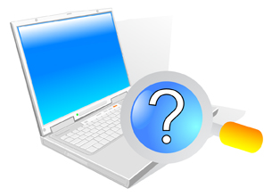
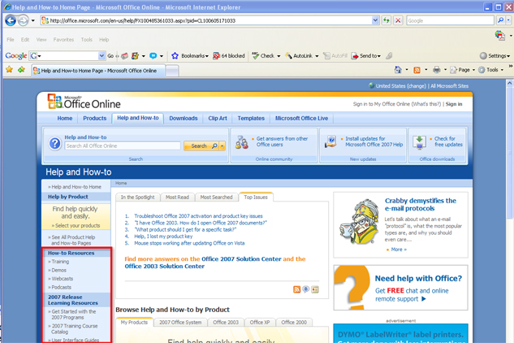
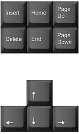
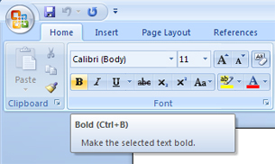

Carefully study the Microsoft Word 2007 screen to see how the user interface has changed and to learn about some of the new features.
Go to the Instructional Videos and choose “The Screen of Microsoft Office 2007” to see how to use Microsoft Word 2007 screen features.
Resourceful, adaptable, life-long learners know where to look for information. There are several ways to find information and teach yourself how to use your word-processing software. You can

© Slash331/shutterstock
Go to the Instructional Videos and select “Accessing Help” to see how to access help for Microsoft Word 2007.
Microsoft has developed a variety of how-to resources to support the users of their products. From Microsoft Online, you can access training, demonstrations, webcasts, podcasts, and information on how to become Microsoft Office Certified. You can go there to refresh your memory or to learn a new skill.

Microsoft product screen shot(s) reprinted with permission from Microsoft Corporation.
© Liv friis-larsen/shutterstock
It is important to be able to move through a document efficiently to save time during document production.
Some of the basic navigating functions and their definitions are listed below.
The Insertion Point is the vertical blinking line that shows you where text will be inserted in your document (also known as a cursor).
Word Wrap allows you to type continuously without having to hit Enter at the end of the line (the text automatically wraps to the next line).
The Enter key is used to create blank lines by moving the cursor down in the document. Be careful — sometimes hitting the Enter key too much can add unnecessary blank lines at the end of your document, causing blank pages when it’s time to print.
To delete a character to the right of the cursor, press Delete. To delete a character to the left of the cursor, press Backspace. You can also select unwanted text by holding down the left button of the mouse as you highlight the text and hitting either the Delete key or the Backspace key.
In previous versions of Word (not in Word 2007), the Insert key will activate the Overtype Mode to type overtop of or replace text.
Find the keys below on your keyboard. These keys help you to navigate your document seamlessly as you type. Every time you reach over and use the mouse, your productive time decreases. By knowing where these keys are and how to use them, you won't have to take your hands away from the keyboard.

| Desired Movement | Press | Desired Movement | Press |
| Next character | Next line | ||
| Previous character | Previous line | ||
| Next word | + | Next paragraph | + |
| Previous word | + | Previous paragraph | + |
| Beginning of line | Next screen | ||
| End of line | Previous screen | ||
| Beginning of document | + | Go to page | + |
| End of document | + |
A quick trick to speed up your work is to start learning and practising software keyboard shortcuts keys, such as Ctrl + B for Bold. In Microsoft Word, you can hover your mouse over the command buttons for a pop-up that contains the command name, description, and available keyboard shortcut.

Microsoft product screen shot(s) reprinted with permission from Microsoft Corporation.
The main advantage of word-processing software is the ability to move and manipulate text in a document quickly and easily.
Go to the Instructional Videos and select “How to Insert, Delete, or Move Text” to learn how to insert and delete text.
Go to the Instructional Videos and select “Using Copy and Paste.” This demonstration will show you how to select and move text using the cut, copy, and paste features.
Spelling and grammar checks are vital steps for any document as they ensure that your ideas are communicated clearly. Go to the Instructional Videos and select “How to Make Spelling and Grammar Corrections.” This demonstration shows you how to use these important functions to catch and fix errors in your documents.
Think you're ready to print? Want to know what your document looks like at a certain stage of completion? By going to the Instructional Videos and selecting “Print Previewing Your Document,” you will discover how to preview a document to see how it will look when it is printed.